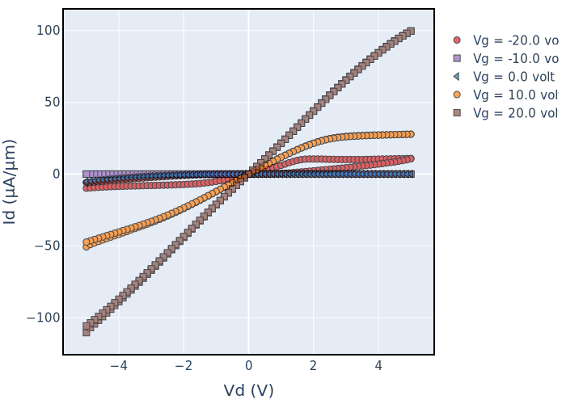
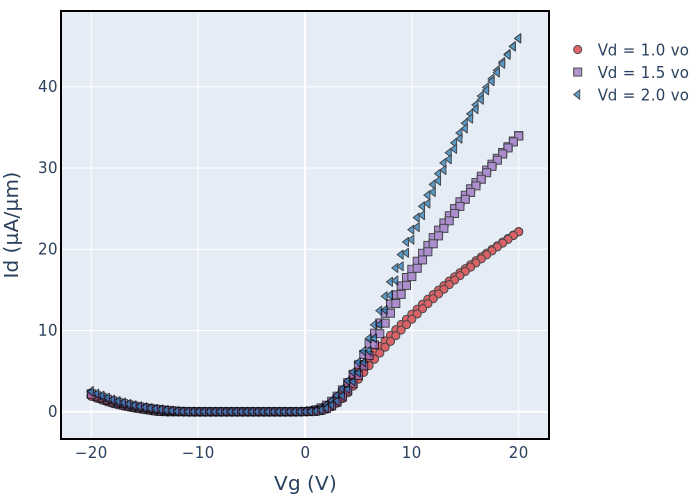
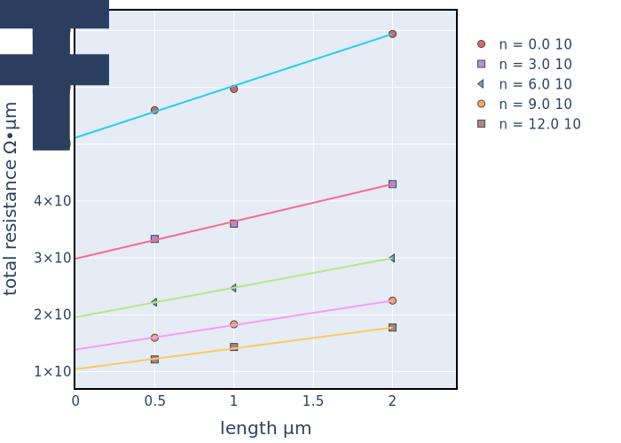
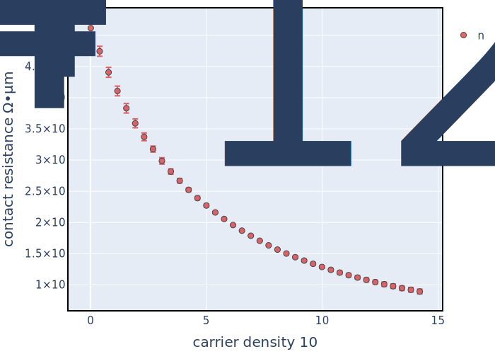
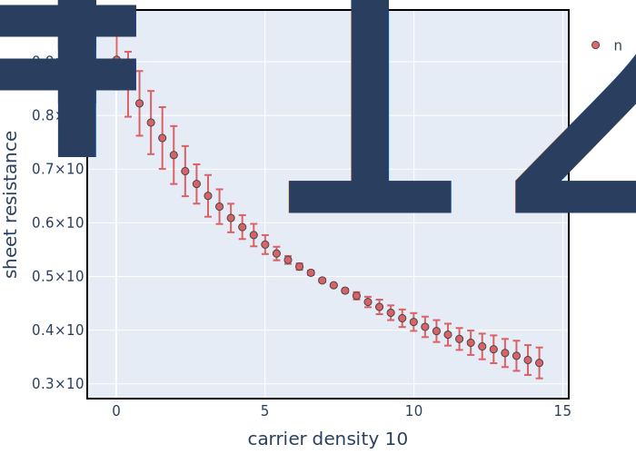

2. Examples¶
2.1. Analyzing 2D FET IdVd and IdVg Data¶
Below is a simple example of analyzing Id-Vg data of a 2D semiconductor transistor.
from SemiPy.Extractors.Transistor.FETExtractor import FETExtractor
from physics.value import Value, ureg
idvd_path = './WSe2_Sample_4_Id_Vd.txt'
idvg_path = './WSe2_Sample_4_Id_Vg.txt'
# create the FET extractor
FET = FETExtractor(width=Value(1, ureg.micrometer), length=Value(1, ureg.micrometer),
tox=Value(30, ureg.nanometer), epiox=3.9, device_polarity='n',
idvg_path=idvg_path, idvd_path=idvd_path)
FET.save_plots()
Calling FET.save_plots() will then save the IdVd and IdVg data plots


Property |
Value |
Unit |
|---|---|---|
width |
1 |
micrometer |
length |
1 |
micrometer |
max_mobility |
15.82 |
centimeter ** 2 / second / volt |
max_gm |
3.64 |
microsiemens / micrometer |
Vt_avg |
3.78 |
volt |
hysteresis |
-0.56 |
volt |
max_Ion |
45.97 |
microampere / micrometer |
2.2. Analyzing TLM Data¶
Below is a simple example of analyzing TLM data of a 2D semiconductor.
from SemiPy.Extractors.TLM.TLMExtractor import TLMExtractor
from physics.value import Value, ureg
idvg_path = './TLMExampleData'
widths = Value(4.0, ureg.micrometer)
lengths = Value.array_like(np.array([1.0, 0.5, 2.0]), unit=ureg.micrometer)
tox = Value(90, ureg.nanometer)
TLM = TLMExtractor(widths=widths, lengths=lengths, tox=tox, epiox=3.9,
device_polarity='n', idvg_path=idvg_path, vd_values=[1.0, 2.0])
TLM.save_tlm_plots()
Calling TLM.save_plots() will then save the IdVd and IdVg data plots


